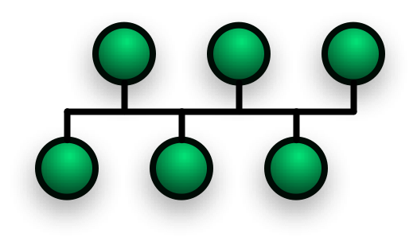

Topologie di rete
| Nome | Descrizione | Immagine | Vantaggi e svantaggi |
|---|---|---|---|
| Rete full connecting |
Una rete si definisce full connecting (punto a punto), quando tutti i device collegati alla rete hanno un cavo per ogni nodo della rete. Cioè quando ogni computer o device può parlare direttamente con tutti gli altri computer. |
 |
VANTAGGI:1. In caso di un guasto su un cavo, tutti gli altri computer possono parlarsi.2. Ogni computer può parlare con un altro computer in un solo passo. SVANTAGGI:1. Se la rete diventa grande il costo diventa enorme.2. I computer che possono partecipare a questa rete sono speciali, cioè, possono gestire tante schede di rete. |
Rete a stella |
Una rete si definisce a stella, quando tutti i device sono collegati ad un unico computer universale. Cioè quando ogni computer o device può parlare ad un unico computer. |
 |
VANTAGGI:1. È una rete semplice.2. È adatta a tutti i normali computer. 3. È facile aggiungere nuovi elementi alla rete. SVANTAGGI:1. Questa rete ha un singolo punto di fallimento (SPOF), cioè sesi rompe il nodo centrale nessuno più riesce a comunicare. 2. Il numero di nodi della rete dipende dalle caratteristiche del nodo centrale. 3. L'uso di un'app è pericoloso perché consente a uno degli altri nodi collegati di leggere i messaggi scambiati. |
Rete ad anello |
Una rete ad anello è quella rete in cui ogni nodo è collegato a due altri nodi, normalmente questa rete ha un verso di comunicazione |  |
VANTAGGI:1. È una rete espandibile e semplice.SVANTAGGI:1. Se si rompe un nodo o un cavo la rete è bloccata.2. Per poter usare la rete bisogna aspettare il proprio turno. |
Rete a Bus |
Una rete a Bus è quella rete in cui tutti i nodi sono collegati ad un cavo speciale, chiamato Bus. Questo cavo consente a tutti i nodi di coomunicare conemporaneamente senza dover aspettare un turno. |
 | VANTAGGI:1. È facile aggiungere nuovi nodi.2. I computer collegati sono semplici. SVANTAGGI:1. La rottura del bus blocca tutta la rete.2. Il traffico causato da un nodo può rallentare tutti gli altri. |
Rete ad albero |
La rete ad albero è una rete in cui alcuni nodi si comportano da responsabili di un pezzo della rete. |  |
VANTAGGI:1. È una rete semplice in cui è possibile definire dei ruoli.2. I nodi si possono facilmente aggiungere con un impatto limitato al nodo padre. SVANTAGGI:1. La comunicazione tra due nodi può richiedere molti passi.2. La rottura di un nodo blocca tutte le comunicazioni a valle. |
Suddivisione in base all'estensione:
Tipologie di rete
| Nome | Descrizione | Immagine | Vantaggi e svantaggi |
|---|---|---|---|
LAN |
La rete LAN (Local Area Network) è una rete che copre una stanza o al massimo un edificio. |  |
VANTAGGI:1. È una rete economica.2. È una rete semplice da realizzare. SVANTAGGI:1. Per come è costruita non può essere molto estesa.2. Normalmente è poco sicura. |
CAN |
Una rete CAN (Campus Area Network) è una rete che serve ad unire più reti in uno o più edifici. |  |
VANTAGGI:1. Consente di condividere facilmente risorse aziendali senza accedere ad Internet.2. È normalmente più sicura. SVANTAGGI:1. È più costosa di una LAN.2. È complicata da realizzare e mantenere. |
MAN |
La rete MAN (Metropolitan Area Network) è una rete che copre una città o parti di essa. |  |
VANTAGGI:1. Risorse aziendali senza accesso ad Internet.2. È una rete sicura. SVANTAGGI:1. Ha costi molto elevati.2. È molto complicata da gestire. |
WAN |
Una rete WAN (Wide Area Network) è una rete in grado di coprire una o più regioni, in genere permette di connettere il MAN. |  |
VANTAGGI:1. Consente di avere una rete privata parallela ad internet.SVANTAGGI:1. Ha dei costi altissimi.2. La gestione di questa rete richiede tanti esperti. |
WLAN |
Una rete WLAN (Wireless Local Area Network) indica una rete locale "senza fili", ovvero dei tipi di rete che non hanno bisogno di collegamenti via cavo per collegarsi ad internet. |
 |
VANTAGGI:1. È molto semplice da realizzare.2. È molto economica. 3. È facilissimo aggiungere nuovi nodi. SVANTAGGI:1. È poco sicura.2. La velocità della rete è limitata. |